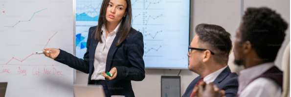

考えるLGBTQ講演会
内容
1
初めにLGBTQとは何かを説明します。

2
その上でLGBTQの抱える悩みや不安、実際に起きている問題について具体例を交えてお話ししていきます。

3
その後はディスカッションを行います。LGBTQの方も含めた誰もが生きやすい社会とはどんなものかを話し合う場とし、それぞれの最善を模索していきます。 話を聞くだけでなく、各々で考えて議論をしていただくことでよりLGBTQに関する問題を身近に感じてほしいと考えています。